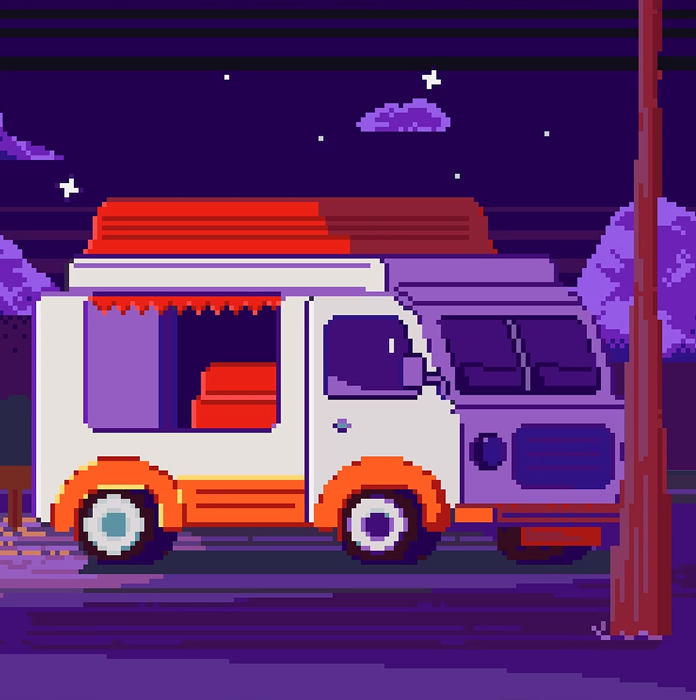
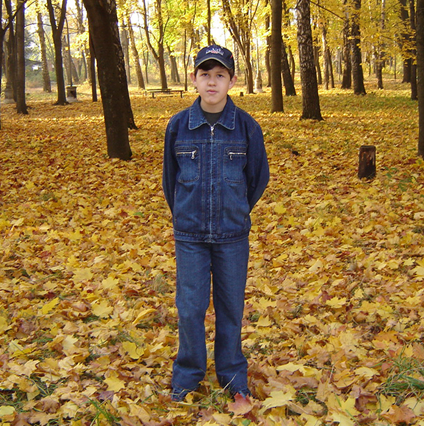
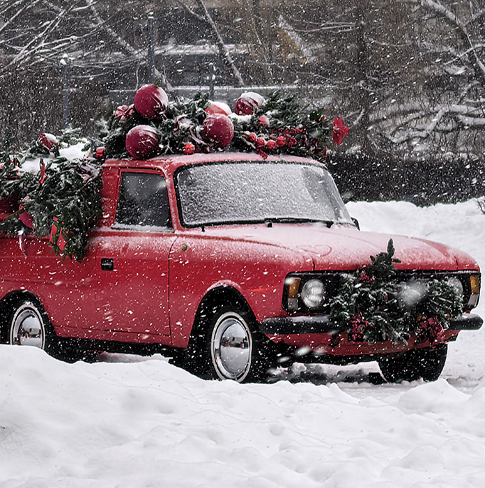
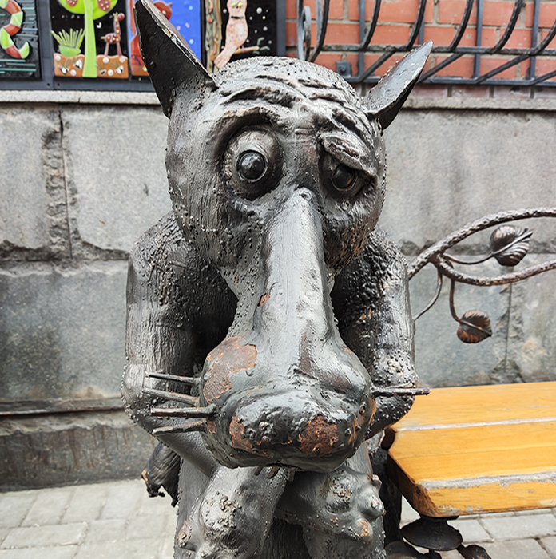
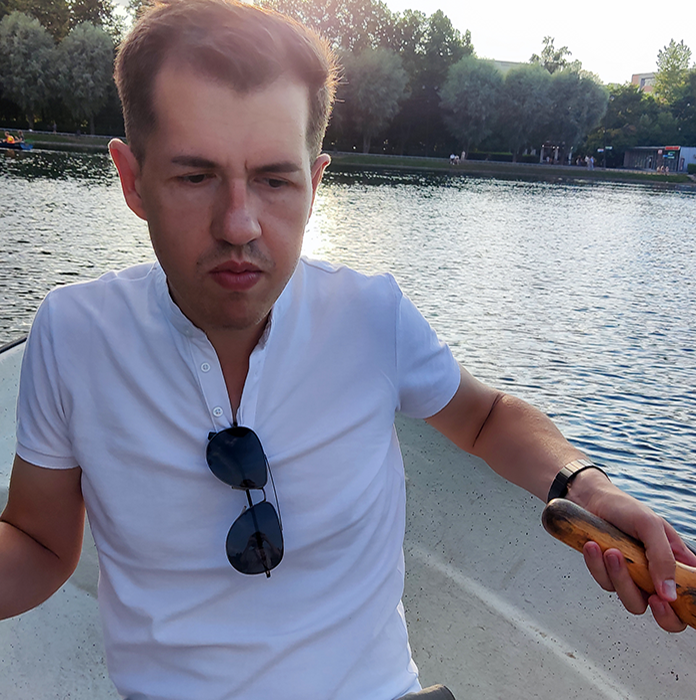
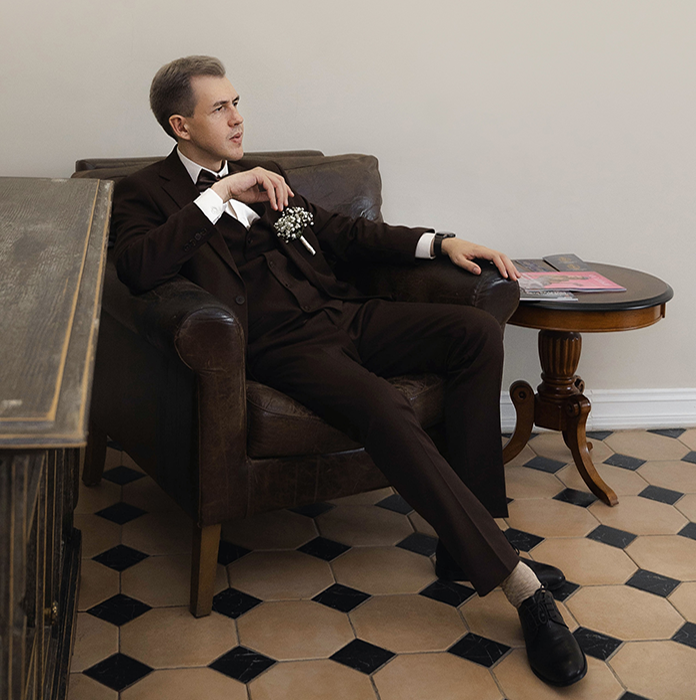

Фритрек и нулевой спринт: Подготовка к работе

<HTML>: Начало1 спринт: Я — чистый лист

<HTML>: Шаг за шагом1 спринт: А если не получится?
<HTML>: Сомнения
2 спринт: Погоня за идеалом

<HTML>: Новый год2 спринт: О тех, кто рядом
<HTML>: Сила любви
3 спринт: Обходные стратегии

<HTML>: Может, потом?3 спринт: Когда опускаются руки

<HTML>: Адаптация«Сейчас я здесь»

<HTML>: Ни шагу назад